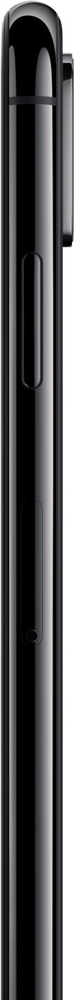

大屏幕上见。
超视网膜显示屏现以两种尺寸为你演绎广阔的精彩，
其中一款更是 iPhone 史上最大的显示屏。此外，更
有识别速度进一步提升的面容 ID、iPhone 迄今最智
能最强大的芯片，以及支持景深控制的突破性双镜头
系统。iPhone XS 云集了 iPhone 无数深得人心的亮
点，并展现得淋漓尽致。
观看主题演讲> 观看影片
iPhone 的新一代
观看影片 >
超视网膜显示屏，两款大作一起登场。
它们经过精心定制，是 iPhone 色彩精准度最高的
OLED 显示屏，支持 HDR 显示，并能呈现真实深邃的黑色。其中，iPhone Xs Max 更拥有 iPhone 迄今最大的显示屏。
进一步了解
材质样样出众。
iPhone迄今最坚固耐用的玻璃面板，由原子级工艺造就的夺目新款金色外观， 精密打造的手术级不锈钢边框，以及更胜以往的抗水防尘特性2。

手术级不锈钢。
三种外观的结构边框，
都是由 Apple 特别设计的合金材料精
密打造而成。
无线充电。
金色
iPhone XS 采用玻璃背板，
支持无线充电3，并且充电速度比
iPhone X 更快。
物理气相沉积 (PVD) 着色工艺。
金色
和深空灰色外观的不锈钢边框采用先进
的物理气相沉积着色工艺，使颜色和反
射率与玻璃机身相得益彰。密打造而成。
先进的面容 ID。
现在你可以用自己的脸当作密码，所以安全保障变得简单多了。只要看一眼，就能解锁 iPhone、登录 app 或进行支付。这种面容识别技术的安全性非常出色，而且现在速度比之前更快。
进一步了解
比较各款iphone
机型。
进一步了解
>